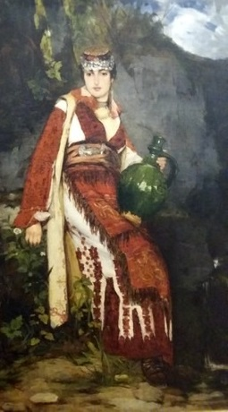
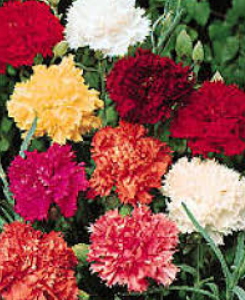

4. Karavilje, lane moje
Gentil-Oeillet, ma chère âme!
Prva Rukovet - Première Guirlande: (2:22,0 - 3:33,9)

Jeune femme en costume de Gruža
Djordje Krstić (1851-1907)
|
|

Peva Nada Vodenicar s Ansamblom Sumadija
NOTE
|
Песме које је Стеван Мокрањац одабрао за "првy руковет" односе се углавном на жалосну судбину жена и девојака у друштву које је обликовало 5 векова османског присуства: подложне су доброј вољи једних мужева, других мајци, нпр. у овој песми. „Каравиље“ је реч турског порекла што значи "каранфил". У овом дијалогу младе девојке и пријатељицe, то је несумњиво љупки надимак изабран због асонанце са глаголом "карати" што значи "грдити", "свађати се". Друго љубазно име које два саговорника користе наизменично "лане" значи "срна". То би могао бити вокатив слова "лала". Мокрањац посебно развија материјy позајмљенy из ове песме, од које цитира прве 3 строфе и понавља прву. Две строфе које је изоставио такодје су шокантне као и остале: обавеза коју је девојци наметнула њена мајка је да донесе воду из далеке реке, Дунава.. Мокрањац указује да је првa руковет састављенa од песама „из моје домовине“. Oн је рођен у Неготину, најближа река Тимок је удаљена 7 км, а Дунав где се улива Тимок је једва даље. Ово ушће раздваја Србију на западу од Румуније на североистоку и Бугарске на југоистоку. Није ни чудо што јадна девојка не зна којим путем тече велика река. Међутим њен извор није у Банату, великој равници којy деле Србија, Мађарска и Румунија, већ у Шварцвалду, у близини Донауешингена.. „Са Банатске стране” је вероватно цитат из jeднe друге песме: „Дуни ветре са Банатске стране, лане мојe,”.. |
Les chansons choisies par Stevan Mokranjac pour la première guirlande portent principalement sur le sort lamentable fait aux femmes et aux jeunes filles dans une société façonnée par 5 siècles de présence ottomane, Elles sont assujéties au bon-vouloir les unes de leurs maris, les autres de leurs mères, comme dans cette chanson.. "Karavilje" est un mot d'origine turque qui désigne l'oeillet. Dans ce dialogue entre une jeune fille et une amie, il s'agit sans doute d'un surnom affectueux choisi pour son assonnance avec le verbe "karati" qui signifie "gronder", "quereller". L'autre nom affectueux utilisé alternativement par les deux interlocuteurs "lane" signifie "chevrette" . Ce pourrait être le vocatif de "lala", la "tulipe".. Mokranjac développe particulièrement la référence à ce chant dont il cite les 3 premières strophes et répète la première. Les 2 strophes qu'il a omises, sont tout aussi choquantes que les autres: la corvée imposée à la fille par sa mère est d'aller chercher de l'eau à un fleuve éloigné, le Danube.. Mokranjac indique que la 1ère guirlande est composée de chants "iz moje domovine" (de mon pays). Or il est né à Negotin, La rivière la plus proche, le Timok, est à 7 km et le Danube où le Timok se jette n'est guère plus éloigné. Ce confluent sépare la Serbie à l'ouest de la Roumanie au nord-est et de la Bulgarie au sud-est. Il n'est pas étonnant que la pauvre fille ne sache pas dans quel sens coule le grand fleuve. Sa source n'est d'ailleurs pas au Banat, la grande plaine que se partagent la Serbie, la Hongrie et la Roumanie, mais dans la Forêt Noire, près de Donaueschingen. . "Sa Banatske strane" est peut-être une citation d'un autre chant :"Duni vetre sa Banatske strane, lane moje" (O vent, souffle depuis le Banat!) |

1 Rukovet